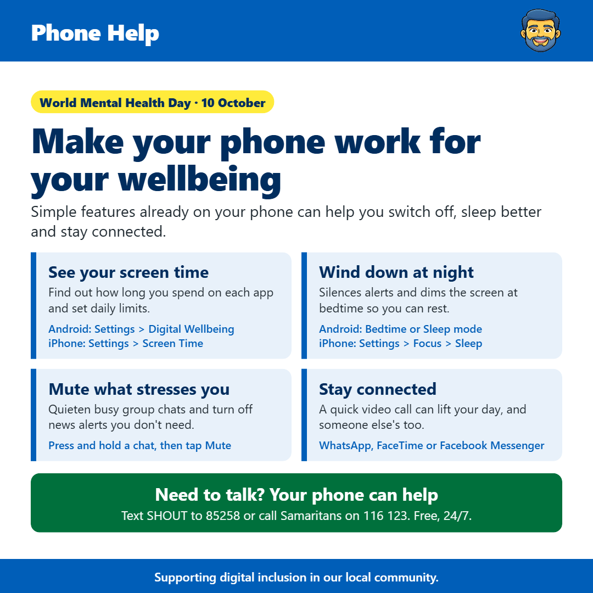

Make your phone work for your wellbeing

Hi everyone, World Mental Health Day was on 10 October, so I wanted to share a few simple things your phone can already do to help you feel a bit calmer and more connected.
Phones are brilliant, but it's easy to lose track of how much time we spend on them. Both Android phones and iPhones can show you exactly how long you spend on each app. On Android, go to Settings and tap Digital Wellbeing. On an iPhone, go to Settings and tap Screen Time. You might be surprised by what you find. You can also set a daily time limit for any app if you'd like to cut back.
Phones can also help you sleep better. Bedtime or Sleep mode silences notifications and dims your screen at a set time each night, so you're not woken up by messages or tempted to keep scrolling. On Android you'll find it as Bedtime mode or Sleep mode, depending on your phone. On an iPhone, go to Settings, then Focus, then Sleep.
If a busy group chat or constant news alerts are getting to you, you can quieten them without leaving the group or deleting the app. In WhatsApp, just press and hold on the chat and tap Mute, then choose how long for. For news apps, go into your phone's Settings, tap Notifications, and switch off alerts for any apps you don't need to hear from.
Your phone can also be a great way to stay close to people. A quick video call on WhatsApp, FaceTime or Facebook Messenger can make a real difference to someone's day, and to yours. If you've been meaning to get in touch with someone, now is a good time.
If you're struggling and need someone to talk to, help is just a call or text away. You can text SHOUT to 85258 if you'd rather not talk, or call Samaritans free on 116 123. Both are free and available 24 hours a day.
If you'd like help setting any of this up on your phone, just comment below and I'll do my best to help.
I hope this helps, and feel free to pass it on to anyone who might find it useful.